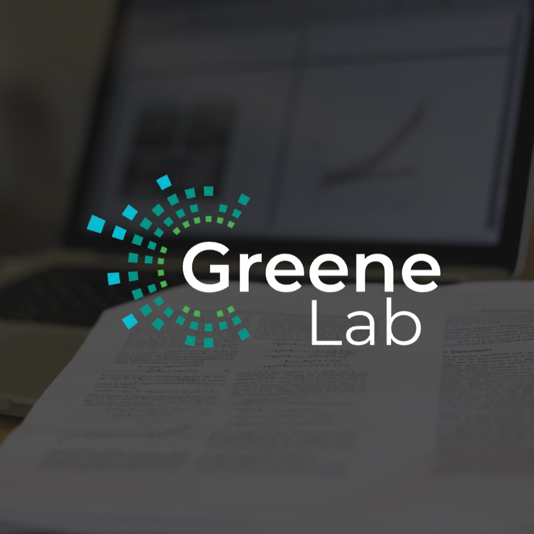
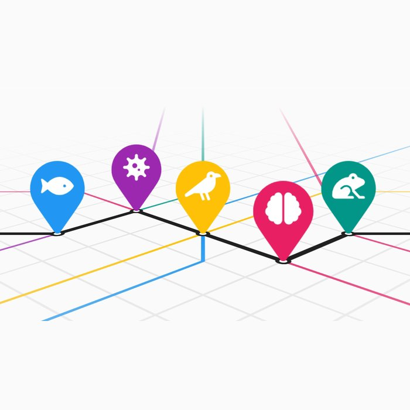
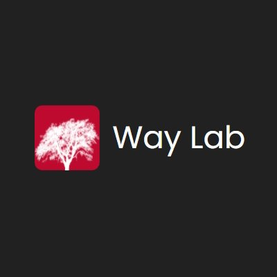
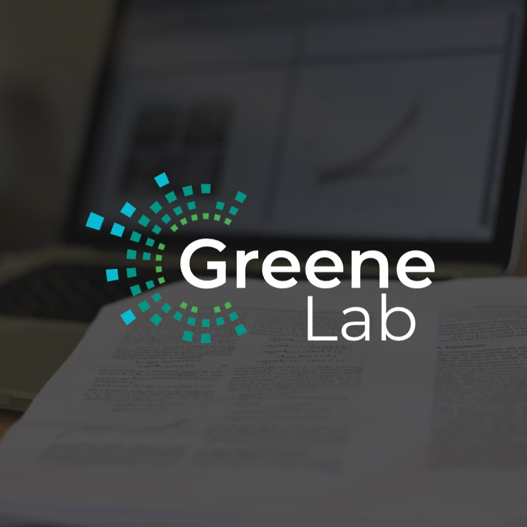
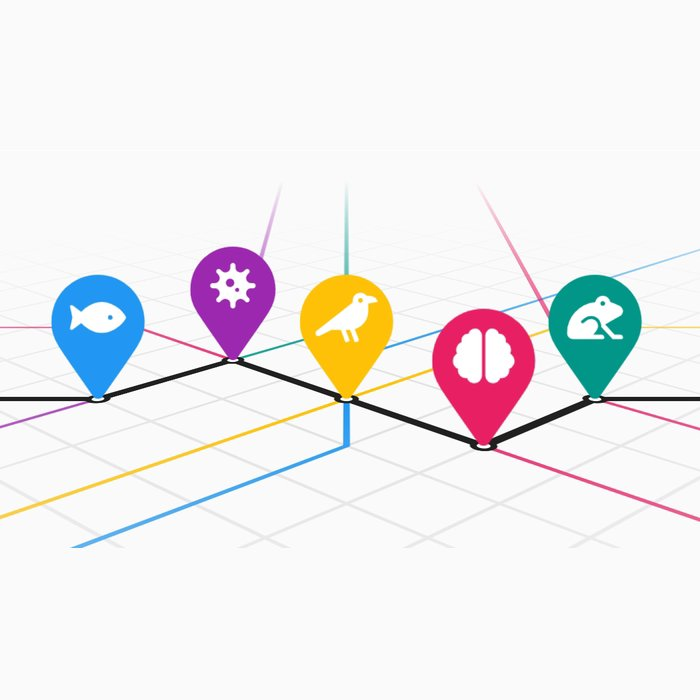
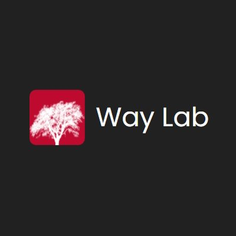

Introduction
Research labs need a professional and up-to-date website to showcase their work, attract collaborators, and establish an online presence, but developing and maintaining one can be challenging and time consuming. Lab Website Template is an open-source, code-based tool that automates citation generation, repo configuration, and anything else it can, letting labs focus more on research and less on web development and grunt work.
Approach
Before v1.0, we gathered many observations and direct feedback that shaped our approach. Some things we noticed:
-
 The most
common pain points were about the same things
same things, like repo setup and configuring
key options.
The most
common pain points were about the same things
same things, like repo setup and configuring
key options.
-
 Labs can't waste time on basics or low-level details, but
still need ways to customize things.
Labs can't waste time on basics or low-level details, but
still need ways to customize things.
- Labs want to see that a tool is actively maintained, strongly sold by good support.
Some philosophies we adopted to address these needs:
-
 Doing > instructing. Aggressively experimenting with GitHub
Actions and scripting, we found we could automate much more
setup/config/etc. than we thought.
Doing > instructing. Aggressively experimenting with GitHub
Actions and scripting, we found we could automate much more
setup/config/etc. than we thought.
- Don't let issues languish. We respond quickly and discuss suggestions to make people feel heard, even if actual resolution takes longer.
-
 Keep it simple and focused. We earnestly consider all
feedback, but also don't accept every suggestion at face value to
avoid feature/config bloat (inner-platform effect).
Keep it simple and focused. We earnestly consider all
feedback, but also don't accept every suggestion at face value to
avoid feature/config bloat (inner-platform effect).
-
 Code/comments aren't enough. We have a
full GitBook docs site
with examples, FAQs, guides, diagrams, search, etc. Labs can help
themselves for common things, which saves us time for more novel
work.
Code/comments aren't enough. We have a
full GitBook docs site
with examples, FAQs, guides, diagrams, search, etc. Labs can help
themselves for common things, which saves us time for more novel
work.
- Cleanly structure content. We separate template content from user content so labs can focus on just what's important to them, but still look "under the hood" when needed.
Technologies
 GitHub
Pages for hosting. Actions for automation.
GitHub
Pages for hosting. Actions for automation.
 Markdown
For content.
Liquid for
templating.
Python
For auto-cite scripts. Familiar for researchers.
Markdown
For content.
Liquid for
templating.
Python
For auto-cite scripts. Familiar for researchers.
 Docker
Runs template locally. Cross-platform. Single install.
Ruby
For data filtering. Other misc.
Docker
Runs template locally. Cross-platform. Single install.
Ruby
For data filtering. Other misc.
Auto-Citations
Who wants to manually manage citations?
Simple input

 Rich output
Rich output
orcid.yaml
- orcid: 0000-1111-2222-3333
Input your "meta-sources" as simple IDs.


We auto-expand these into full lists of sources from ORCID, Google Scholar, or PubMed (extensible via plugins).
sources.yaml
- id: doi:12345
image: thumbnail.jpg
tags: biology, data
Input your hand-picked sources as simple IDs (2k+ supported types), and extra rich details.

We auto-generate full citations – title, authors, date, publisher, etc. – with Manubot.
research.md
{%
include list.html
data="citations"
filter="category == 'featured'"
%}
Include citations in your site however you want with the
list component. Filter with unwieldy Liquid
any Ruby expression.
More Automation
Several other automations handle the most confusing and error-prone tasks for you, triggered by events, with little or no manual steps.
-
 Click some buttons, wait a few, and your site is
live and ready to edit.
Click some buttons, wait a few, and your site is
live and ready to edit.
Clean up/rename files
Personalize with
@username/URL/etc.- Edit your content, wait a few, and your changes are live.
main
Build site
Host at main URL
- Suggest changes and preview them before publishing. No Netlify needed.
Host at
/pr-# sub-URLPost PR comment w/ link
-
 Keep your lab's CV up-to-date.
Keep your lab's CV up-to-date.
ORCID/etc. may have updates
Open PR if any changes
Other Features
-
Suite of pre-made components like
figures, citations, and search.
- Team member pages with bios, roles, and social links.
- Blog posts with tags and rich content.
-
Desktop and mobile.
Dark mode.
Outcome
We believe our approach and design lead to a valuable piece of software, evidenced by the template's growing adoption on GitHub, positive feedback, and gallery of active labs using it. This work has likely saved researchers and others significant time and money, reflecting a community resource that effectively serves the needs of its users.
The next evolution could focus on even more convenience, simplicity, robustness, and flexibility. We'd like to use a more modern site generator with type-safety, make template version upgrades automatic, and make citations even more seamless.
 




